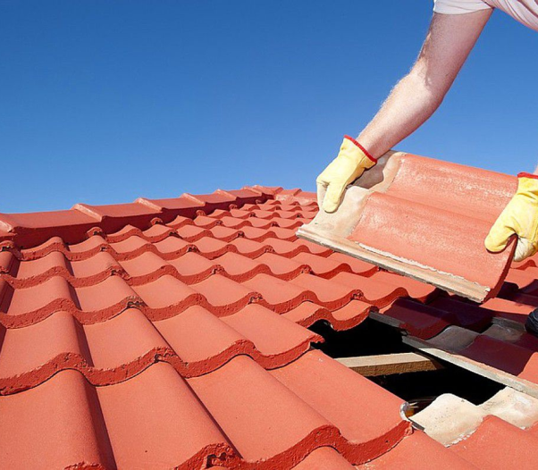
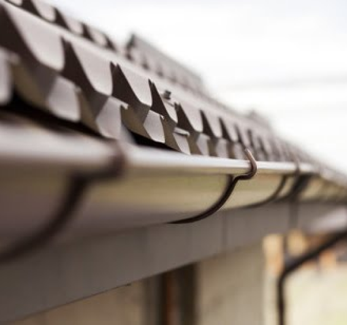
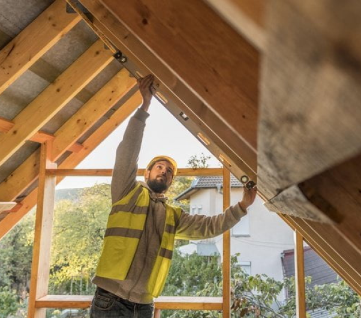
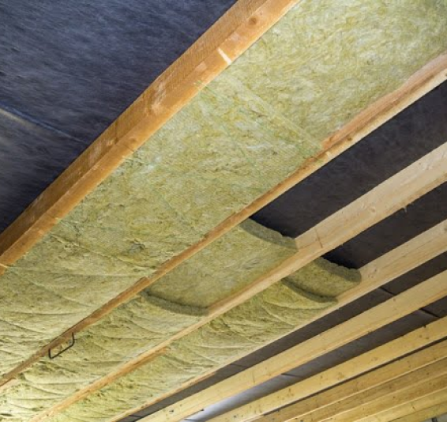

MONTAJ ȘI REPARAȚII
ACOPERIȘURI CASE ȘI BLOCURI
Lucrări de montaj, înlocuire și reparații acoperișuri din țiglă metalică, țiglă ceramică, șindrilă bituminoasă, tablă plană cutată sau fălțuită pentru case, vile și blocuri.


MONTAJ JGHEABURI ȘI BURLANE
Proiectăm sisteme pluviale și executăm lucrări de montaj, reparații și întreținere pentru jhgeaburi și burlane din tablă sau PVC pentru case, vile și blocuri.
DULGHERIE ACOPERIȘ
ȘARPANTĂ
Construcții șarpantă de lemn într-o apă, în 2 sau 4 ape și lucrări de dulgherie acoperiș pentru diferite reparații ale structurii.


IZOLAȚIE MANSARDĂ ȘI POD
Montăm sisteme de hidroizolație și termoizolație pentru orice acoperiș de tablă, țiglă sau șindrilă (folii anticondens, vată bazaltică, polistiren) pentru case, vile și blocuri.